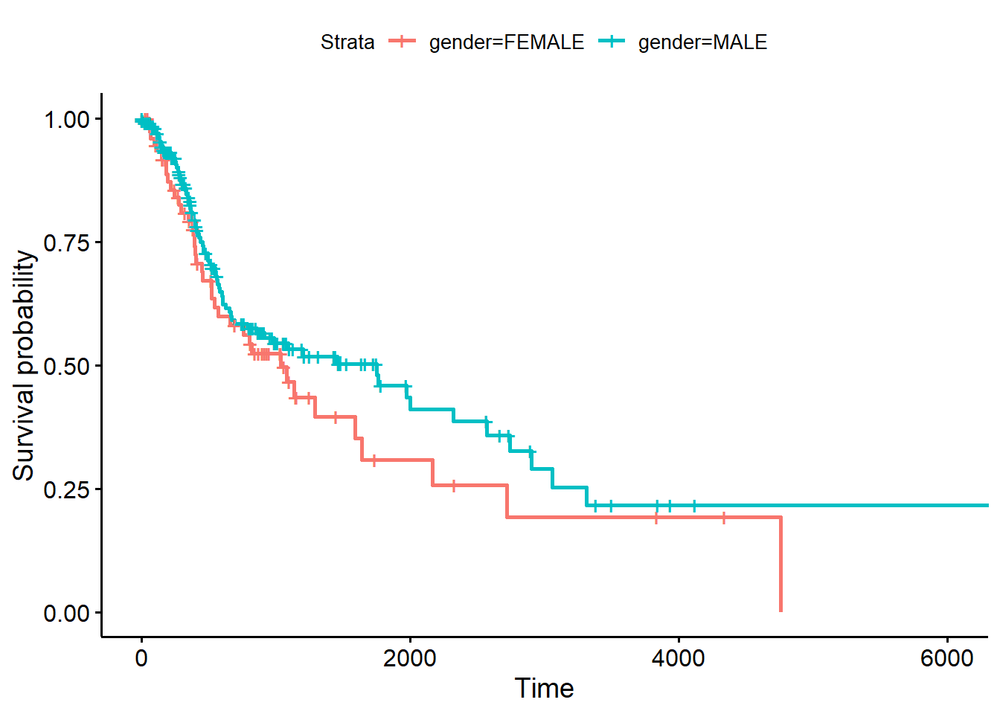
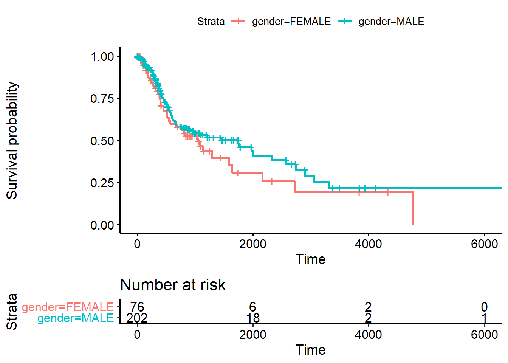

Erstellt ein neues Objekt, welches ihr hnscc_survival nennt und nehmt in diesem folgende Änderungen vor:
days_to_death in OS um und stellt sicher, dass diese ein numerischer Vektor ist.Censor, in der ihr die Spalte vital_status als Faktor speichert (as.factor()).Censor von “LIVING” und “DECEASED” in 0 und 1 um. Googled hierzu, wie man die Level eines Faktors ändern kann.Censor als “normalen” Vektor (as.vector()) zu speichern und dann in einen numerischen Vektor (as.numeric()) zu überführen.hnscc_survival <- hnscc %>%
dplyr::rename(OS=days_to_death) %>%
mutate(Censor = as.factor(vital_status))
levels(hnscc_survival$Censor) <- c(1,0)
hnscc_survival$Censor = as.numeric(as.vector(hnscc_survival$Censor))Die Erstellung des survival Objektes ist gleichzeitig die Kontrolle, ob die Datentransformation geklappt hat. Der Output sollte wie folgt ausschauen:
Surv(hnscc_survival$OS, hnscc_survival$Censor)## [1] 461 415 1134 276 248+ 190+ 845+ 1761 186+ 179+ 242+ 1635+
## [13] 1747+ 152+ 244+ 450 63+ 395 113+ 236+ 186+ 2891+ 275+ 140+
## [25] 557+ 412+ 310+ 142 194+ 325+ 166+ 343+ 383+ 522+ 369+ 395
## [37] 240+ 436 348+ 810+ 875+ 397 279+ 289+ 173+ 377 866+ 252
## [49] 493 351 360 352 380 259 413+ 274+ 207+ 228+ 143+ 154+
## [61] 201+ 159+ 45+ 134+ 97+ 276 201+ 188+ 224+ 42+ 177+ 83+
## [73] 119+ 112 100+ 46+ 1465+ 1207+ 654 89 841+ 896+ 1028+ 317
## [85] 128 870+ 984 1000+ 1057+ 984+ 403 128 455 814+ 1006+ 693+
## [97] 2562+ 358+ 1662+ 1152+ 798+ 1777+ 1521+ 1202 1050+ 1125+ 563 514+
## [109] 183 311+ 345+ 354+ 233+ 379+ 350+ 479+ 282 1435+ 1190+ 1440+
## [121] 1244+ 1090 104+ 93 759+ 889+ 30+ 972+ NA+ 1036+ 606 796+
## [133] 521 997+ 1430+ 822 392+ 907+ 913+ 946+ 908+ 898+ 929+ 216+
## [145] 156+ 180+ 1077+ 910+ 1471+ 4115+ 522 3930+ 3314 2318 584 546
## [157] 2732+ 2663+ 2326+ 2567+ 1969+ 545 406 540+ 1736+ 1478+ 1007+ 215
## [169] 1315+ 1246+ 405+ 743+ 291 2740 65 295 166 624 143 665
## [181] 804 342 3835+ 602 366 1288 458 914 185 1640 2002 334
## [193] 217 255 861 76 126 1971 3836+ 3380+ 572 385 243 274
## [205] 159 56 1591 392 662 2166 327 3496+ 1724+ 144 1444+ 1095+
## [217] 953+ 797+ 577 520 2900 151 361 1459 64 1099+ 560 1748
## [229] 1081 6416 2717 294 14 695 761 789 2 1037 3058 452
## [241] 4760 106 495 2570 600 217 4334+ 505 194 669 316+ 321+
## [253] 236+ 828+ 403 325+ 250+ 238+ 77+ 152+ 153+ 1149+ 1058+ 516+
## [265] 477+ 548 427 360+ 299+ 35+ 30+ 2+ 5+ 25+ 0+ 0+
## [277] 160+ 122+ 113+survfit Funktion ein Objekt mit Namen fit für die Kaplan-Meier-Kurve, in der ihr das Geschlecht analysiert.fit <- survfit(Surv(OS, Censor)~gender, data=hnscc_survival)fit, welches ihr in Übung 2 erstellt habt.ggsurvplot(fit, hnscc_survival)
ggsurvplot(fit,
hnscc_survival,
risk.table = TRUE)## Warning: Vectorized input to `element_text()` is not officially supported.
## Results may be unexpected or may change in future versions of ggplot2.
# Beispielmodel: Alter und Tabacco group
tidy(coxph(Surv(OS, Censor)~age + tabacco_group, data=hnscc_survival),
exponentiate = TRUE)## # A tibble: 4 x 5
## term estimate std.error statistic p.value
## <chr> <dbl> <dbl> <dbl> <dbl>
## 1 age 1.02 0.00931 2.58 0.00986
## 2 tabacco_groupCurrent reformed smoker for~ 0.520 0.292 -2.23 0.0255
## 3 tabacco_groupCurrent smoker 1.22 0.235 0.838 0.402
## 4 tabacco_groupLifelong Non-smoker 0.553 0.309 -1.92 0.0552Alter und Tabacco Group sind unabhängige prognostische Einflussgrößen.
Nein